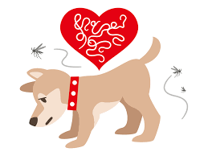
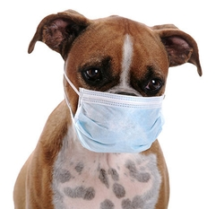
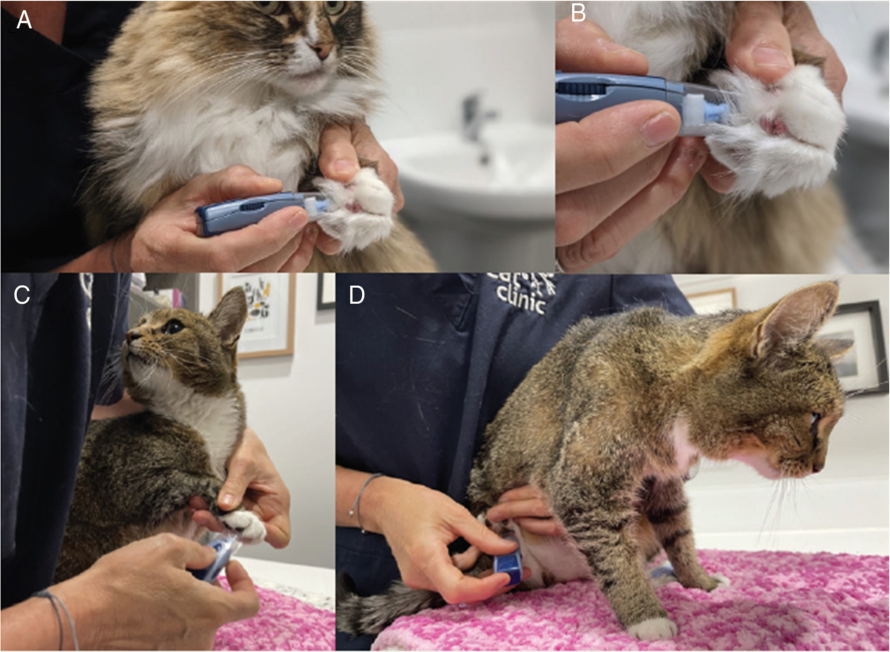
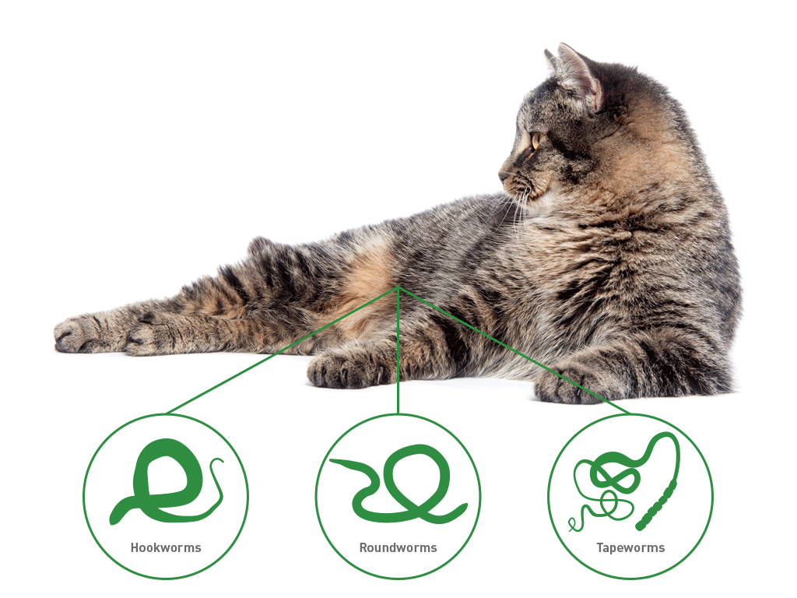

Every day, FDA’s Center for Veterinary Medicine (CVM) receives calls and emails from pet owners, like you about many different topics. Some serious topics include what to do when a pet gets into things he shouldn’t, what to do if a pet gets too much medicine or gets the wrong medicine, or what to do when a pet owner accidentally takes a pet’s medicine.
When your pet eats or gets into something she shouldn’t, what should you do? Some pet owners call or email CVM first. While CVM employs many veterinarians, the center is a regulatory agency and our veterinarians do not give veterinary treatment, advice, or diagnoses. So, who do you call?
Your Vet Knows Best
Whenever your pet has a situation like one of those above, your best resource is your veterinarian. Why? Your veterinarian knows your pet’s medical history and can give you the most appropriate medical advice for your pet. In some cases, if your pet gets into something potentially dangerous, like a product containing xylitol, you may only have minutes to spare before your pet becomes seriously ill. So, call your veterinarian quickly!
Other Options
If you can’t reach your regular veterinarian, you have other options for getting urgent veterinary advice. One option is to contact your local emergency animal hospital. The emergency veterinarians may be able to give you advice over the phone or they may recommend that you bring your pet in for an exam.
What if I Need Help?
Sometimes pet owners accidentally take their pet’s medicine, especially if it is stored near their own medicine. What if this happens to you or one of your other human family members?
Call 119 if it’s an emergency
Call your doctor
Call any Animal Care or Hospital
Accidents happen to pets and people; sometimes, minutes matter. You can save precious time by knowing who to call, first, when you or your pet needs help. The chart, below, has helpful contact information.
Common Dog Deseases
Dog cancer refers to the development of abnormal and uncontrollable cell growth in dogs. Like humans, dogs can develop various types of cancer, and it is one of the leading causes of death in older dogs. Cancer in dogs can affect any part of the body and can be benign (non-cancerous) or malignant (cancerous)
Diagnosis of dog cancer typically involves a combination of physical examination, imaging (X-rays, ultrasound), blood tests, and sometimes biopsy of the tumor. Treatment options depend on the type and stage of cancer and may include surgery, chemotherapy, radiation therapy, and palliative care to manage symptoms and improve the dog's quality of life.
Early detection and prompt veterinary care are crucial for better outcomes in canine cancer cases. Regular veterinary check-ups and being aware of any changes in your dog's health can help catch potential cancerous growths early. It's essential to consult with a veterinarian if you suspect your dog may have cancer or if you notice any concerning symptoms.
Dog diabetes, also known as diabetes mellitus, is a metabolic disorder that affects the way a dog's body processes glucose (sugar). Glucose is essential for providing energy to cells, and its levels are regulated by insulin, a hormone produced by the pancreas.
In dogs with diabetes, either the pancreas does not produce enough insulin (Type 1 diabetes) or the body's cells become resistant to insulin's effects (Type 2 diabetes). As a result, glucose cannot enter cells properly, leading to high blood sugar levels.
Common symptoms of dog diabetes include:
Increased Thirst and Urination
Weight Loss
Increased Hunger
Lethargy and Weakness
Cloudy Eyes (Cataracts)
If left untreated, diabetes in dogs can lead to more severe complications, such as ketoacidosis (a life-threatening condition), urinary tract infections, and even organ damage.
Diagnosing diabetes involves a veterinarian conducting a physical examination, blood tests (including measurement of blood glucose levels), and urine tests to assess glucose levels and the presence of ketones.
Heartworm disease in dogs is a severe and potentially fatal condition caused by parasitic worms known as Dirofilaria immitis. The worms are transmitted to dogs through the bite of infected mosquitoes. Once inside the dog's body, the heartworm larvae mature into adults and inhabit the heart, lungs, and associated blood vessels.

Over time, these worms can cause damage to the heart and lungs, leading to symptoms such as coughing, difficulty breathing, lethargy, and weight loss. If left untreated, heartworm disease can be fatal.
Prevention is key in managing heartworm disease. Regular use of preventive medications prescribed by veterinarians is essential to protect dogs from heartworm infection. Early detection and appropriate treatment can help improve outcomes for dogs diagnosed with heartworm disease. Annual heartworm testing is recommended, even for dogs on preventive medications, to ensure early detection if infection occurs.
Kennel cough, also known as canine infectious tracheobronchitis, is a highly contagious respiratory infection that affects dogs. It is most commonly caused by a combination of viruses and bacteria, such as the canine parainfluenza virus, canine adenovirus, and Bordetella bronchiseptica.

As the name suggests, kennel cough often spreads in places where dogs are in close contact with each other, such as kennels, dog parks, grooming facilities, and shelters. The infection is typically transmitted through the air when infected dogs cough or sneeze, releasing respiratory droplets containing the infectious agents.
Symptoms of kennel cough may include:
Persistent Coughing
Nasal Discharge
Sneezing
Mild Fever
Most cases of kennel cough are mild and resolve on their own within 1 to 3 weeks. However, in puppies, elderly dogs, or dogs with weakened immune systems, the infection can be more severe and may lead to complications like pneumonia.
Treatment for kennel cough may include rest, supportive care, and in some cases, antibiotics to prevent secondary bacterial infections. Vaccination is available to help prevent kennel cough and is recommended, especially for dogs that are frequently exposed to other dogs in social settings.
If you suspect your dog has kennel cough or if they are showing respiratory symptoms, it's essential to consult a veterinarian for proper diagnosis and guidance. Isolating the infected dog from other dogs is crucial to prevent the spread of the disease.
Canine parvovirus, commonly known as parvo, is a highly contagious viral disease that affects dogs, especially puppies and unvaccinated dogs. The virus is resilient and can survive in the environment for months to years, making it easily transmitted from one dog to another through direct contact with infected feces or contaminated objects..
Parvovirus primarily targets rapidly dividing cells in the dog's body, especially those in the intestinal lining and bone marrow. This results in severe gastrointestinal symptoms and a weakened immune system.
Symptoms of Parvovirus may include:
Severe Vomiting
Diarrhea
Loss of Appetite
Lethargy
Dehydration
Parvovirus can progress rapidly and can be fatal, especially in young puppies with immature immune systems. Timely and aggressive veterinary treatment is essential to increase the chances of survival. Treatment often includes intravenous fluids to combat dehydration, medications to control vomiting and diarrhea, and supportive care to help the dog's immune system fight the virus.
Prevention is the best approach to protect dogs from parvovirus. Vaccination is highly effective in preventing the disease, and it is a routine part of a dog's vaccination schedule. Puppies should receive a series of vaccinations starting at around 6 to 8 weeks of age, with booster shots at regular intervals.
If you suspect your dog may have parvovirus or if you notice any concerning symptoms, seek immediate veterinary attention. Early detection and prompt treatment are crucial in improving the outcome for dogs with parvo. Additionally, practicing good hygiene and avoiding contact with infected dogs can help reduce the risk of the virus spreading.
Common Cat Deseases
Cancer is a class of diseases in which cells grow uncontrollably, invade surrounding tissue, and may spread to other areas of the body. As with people, cats can get various kinds of cancer. The disease can be localized (confined to one area, like a tumor) or generalized (spread throughout the body). Cancer is a “multifactorial” disease, which means it has no known single cause. However, we do know that both hereditary and environmental factors can lead to the development of cancer in cats.
Symptoms of Parvovirus may include:
Swelling
Persistent sores or skin infections
Abnormal discharge from any part of the body
Bad breath
Weight loss
Listlessness, lethargy or other marked change in behavior
Cancer Treatments
Common treatments include surgery, chemotherapy, radiation and immunotherapy or a combination of therapies. Success of treatment depends on the form and extent of the cancer and the aggressiveness of the therapy. Of course, early detection is best.
Some cat owners opt for no treatment of the cancer, in which case palliative care, including pain relief, should be considered. Regardless of how you proceed after a diagnosis of cancer in your pet, it is very important to consider his quality of life when making future decisions.
Some cancers can be cured, and almost all patients can receive at least some benefit from treatment. Please note that if your cat’s cancer is not curable, there are still many things you can do to make your pet feel better. Don’t hesitate to talk to your vet about your options. And remember good nutrition and loving care can greatly enhance your cat’s quality of life.
Diabetes in cats is a complex disease caused by either a lack of the hormone insulin or an inadequate response to insulin. After a cat eats, her digestive system breaks food into various components, including glucose—which is carried into her cells by insulin. When a cat does not produce insulin or cannot utilize it normally, her blood sugar levels elevate. The result is hyperglycemia, which, if left untreated, can cause many complicated health problems for a cat.
Common symptoms of cat diabetes include:
Change in appetite (either increased or decreased)
Weight Loss
Excessive thirst/increase in water consumption
Increased urination
Urinating in areas other than litter box
Diabetes Prevention
A proper diet and regular exercise can go a long way to avoid the development of feline diabetes. Aside from other negative effects, obesity is known to contribute to insulin resistance.
If You Suspect Your Cat Has Diabetes
If your cat is showing any abnormal clinical signs as listed above, make an appointment to see your veterinarian immediately. If a diabetic cat is not treated, he can develop kidney disease, neurological disorders, or other metabolic diseases. Cats with type I diabetes require insulin therapy for survival.
Cats infected with feline immunodeficiency virus (FIV) may not show symptoms until years after the initial infection occurred. Although the virus is slow acting, a cat’s immune system is severely weakened once the disease takes hold. This makes the cat susceptible to various secondary infections. Infected cats receiving supportive medical care and kept in a stress-free, indoor environment can live relatively comfortable lives for months to years before the disease reaches its chronic stages.
An FIV-infected cat may not show any symptoms for years. Once symptoms do develop, however, they may continually progress—or a cat may show signs of sickness interspersed with health for years. If your cat is demonstrating any of the following symptoms, please have examined by your veterinarian:

Enlarged lymph nodes
Fever
Anemia
Weight loss
Abnormal appearance or inflammation of the eye (conjunctivitis)
Diarrhea
Inflammation of the mouth (stomatitis)
Sneezing
FIV Treatment
Unfortunately, there is no specific antiviral treatment for FIV. Cats can carry the virus for a long time before symptoms appear. Therefore, treatment focuses mainly on extending the asymptomatic period or, if symptoms have set in, on easing the secondary effects of the virus. Your veterinarian may prescribe some of the following treatments:
Medication for secondary infections
Healthy, palatable diet to encourage good nutrition.
Fluid and electrolyte replacement therapy
Anti-inflammatory drugs
Immune-enhancing drugs
Parasite control
Rabies is a viral disease that affects the brain and spinal cord of all mammals, including cats, dogs, and humans. This preventable disease has been reported in every state except Hawaii. There’s a good reason that the very word “rabies” evokes fear in people—once symptoms appear, rabies is close to 100% fatal.
Rabies Transmission
There are several reported routes of transmission of the rabies virus. Rabies is most often transmitted through a bite from an infected animal.
Less frequently, it can be passed on when the saliva of an infected animal enters another animal’s body through mucous membranes or an open, fresh wound.
The risk for contracting rabies runs highest if your cat is exposed to wild animals. Outbreaks can occur in populations of wild animals (most often raccoons, bats, skunks and foxes in this country) or in areas where there are significant numbers of unvaccinated, free-roaming dogs and cats.
In the United States, rabies is reported in cats more than in any other domestic species.
Rabies Prevention
Vaccination is the key—and in many areas of the country, such as New York City, it's the law.
Some local ordinances require lengthy quarantines—or euthanasia—of pets who have bitten someone if their owners do not have proof of current vaccination.
Vaccinating your cat doesn't just protect her from rabies—it also protects your cat if she bites someone.
In municipalities where rabies vaccinations for cats are not required, the decision to vaccinate is best left to the judgment of the veterinarian and the cat guardian because some cats experience serious side effects to the rabies vaccine.
What to Do if Your Cat Interacts with a Rabid Animal
Most cases of kennel cough are mild and resolve on their own within 1 to 3 weeks. However, in puppies, elderly dogs, or dogs with weakened immune systems, the infection can be more severe and may lead to complications like pneumonia.
Treatment for kennel cough may include rest, supportive care, and in some cases, antibiotics to prevent secondary bacterial infections. Vaccination is available to help prevent kennel cough and is recommended, especially for dogs that are frequently exposed to other dogs in social settings. Put gloves on to protect yourself from infection. Call your veterinarian for an immediate appointment! Contact local animal control officers if the animal who bit your pet is still at large; they will be best able to safely apprehend and remove the animal from the environment. A cat who is up to date with his vaccinations and who has been bitten by a possibly rabid animal should also be given a rabies booster vaccine immediately and kept under observation for 45 days. If you think you’ve been bitten by a rabid animal, see your doctor immediately!

Cats can acquire a variety of intestinal parasites, including some that are commonly referred to as “worms.” Infestations of intestinal worms can cause a variety of symptoms. Sometimes cats demonstrate few to no outward signs of infection, and the infestation can go undetected despite being a potentially serious health problem. Some feline parasitic worms are hazards for human health as well.
Common Types of Worms in Cats
Roundworms
Hookworms
Tapeworms
Lungworms
Symptoms of Worms in Cats
Symptoms differ depending on the type of parasite and the location of infection, but some common clinical signs include:
Diarrhea
Worms visible in stool or segments of worm seen near anus
Bloody stool
Bloating or round, potbellied appearance to abdomen
Weight loss
Vomiting
Constipation
Trouble breathing
Transmission of Worms from Cats to Humans
Many roundworm eggs can accumulate where cats defecate. People, especially children, who ingest such eggs can develop serious health problems, such as blindness, encephalitis, and other organ damage. Treatment of blindness caused by roundworm may involve surgical removal.
Hookworm larvae can penetrate human skin and cause lesions. People can acquire tapeworms through the ingestion of an infected flea, although this is rare.

Ask a Question